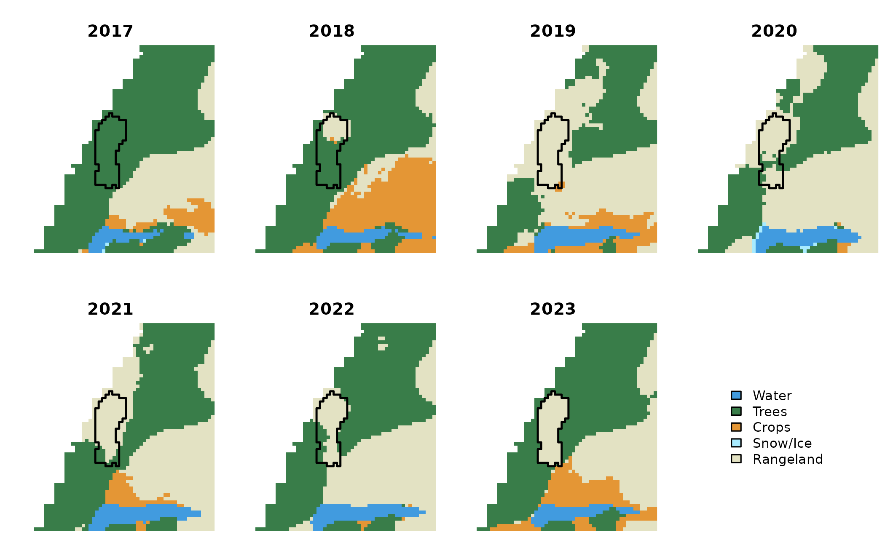
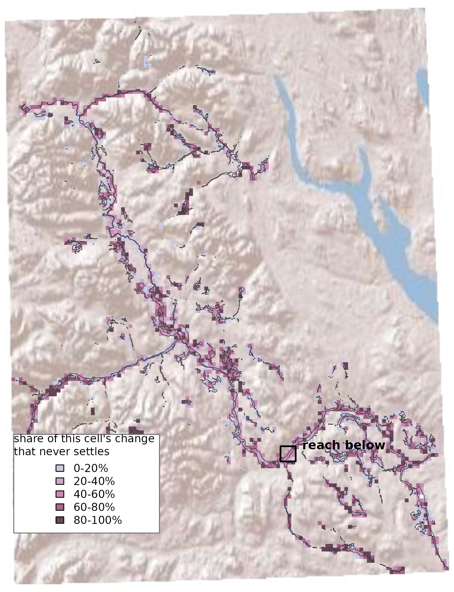
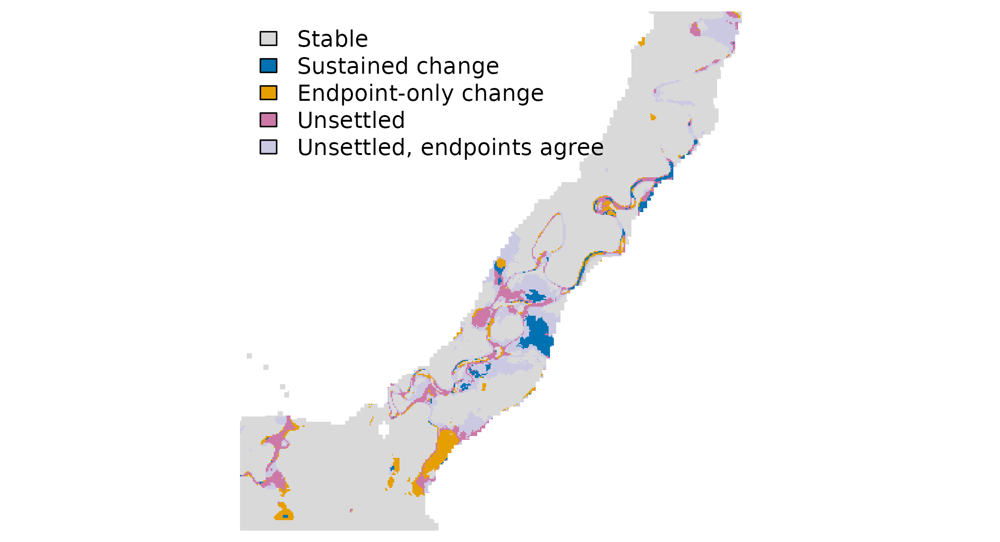
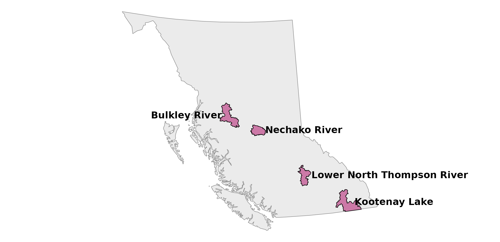
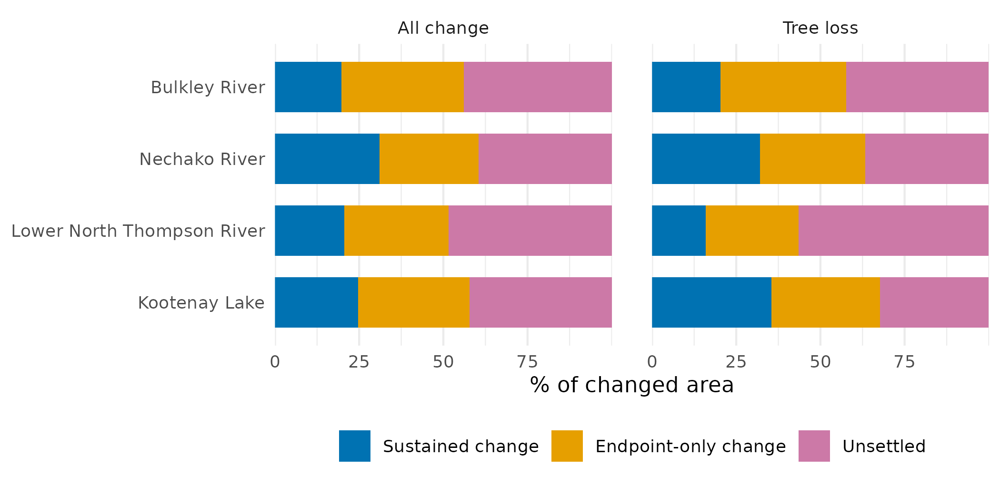
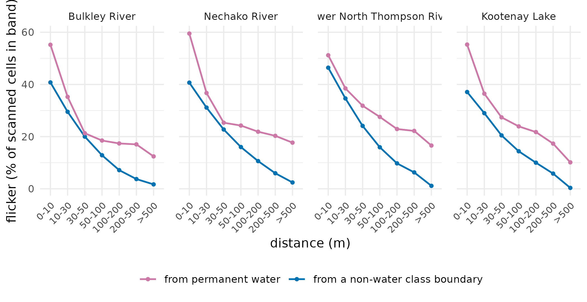

What a Land-Cover Change Figure Is Made Of
Source:vignettes/articles/temporal-composition.Rmd
temporal-composition.RmdA published floodplain land-cover change layer is a comparison of two years. For the Bulkley floodplain — the Bulkley River watershed group — it says that 4,625 ha — about 11% of the mapped floodplain — carried a different class in 2023 than in 2017. That number is the input to most things anyone wants to ask.
This article is about what is inside that number. Not why land cover changed — attributing a patch to a dated fire or cutblock is a separate stage, written up separately — but the prior question: whether the change a two-year comparison reports is a change that stayed.
Looking at every year, not just the ends
The published series carries a classified raster for every year from 2017 to 2023, not only the two endpoints. So each pixel can be read as a seven-year sequence rather than a before-and- after pair, and sorted by how it behaves:
- Sustained change — the land-cover class switches once and holds, for at least two years on each side.
- Endpoint-only change — the class switches once, but one endpoint year is the only year that differs. A real change in the final year of the series looks exactly like this, so it is not the same thing as an error.
- Unsettled — the class changes more than once and never settles.
A fourth group matters too: pixels that flicker between classes but happen to hold the same class in 2017 and 2023. A two-year comparison cannot see them at all.

One 1.44 ha patch of the Bulkley floodplain mapped as Trees in 2017 and Rangeland in 2023, shown for each year of the series. The outline is the patch; classes are Esri IO LULC. The patch was selected by rule, not by eye: of 21,701 change patches, 4036 are Trees to Rangeland, 194 of those are 1 to 4 ha, and 52 of those carry all three temporal categories at 10% or more of their cells. This is the most evenly split of the 52.
The patch above is mapped as Trees in 2017 and Rangeland in 2023, so the published layer counts all 1.44 ha of it as tree loss. Reading across the years, only part of it behaves that way.
The same split across a whole floodplain

The Bulkley River floodplain, aggregated to 1 km cells and binned by the share of that cell’s reported change that never settles. Shaded relief behind it for context; the floodplain is outlined, and the large water body to the northeast is not part of it. The box marks the reach in the next figure.

The same floodplain at the mapped 10 m resolution, over a 4 km reach — the box in the previous figure. Each cell carries its own temporal category rather than a share.
Across the whole Bulkley floodplain 19.7% of the changed area is a sustained switch, 36.4% turns on a single endpoint year, and 44% never settles. Separately, 3,186 ha flickers while reading identically in 2017 and 2023.
Do the other three agree?

The four watershed groups, in British Columbia. These are the four with a complete 2017-2023 annual series published; they are not a sample of anything. Names and boundaries are the BC Freshwater Atlas watershed groups, from the record cited in the shipped data.

Temporal composition of change in the four watershed groups that publish a complete 2017-2023 series, for all change (left) and for tree loss alone (right). Tree loss is every Trees to non-Trees transition except Trees to Clouds, with no patch-size threshold. Four groups is not a sample; the panel shows that the ordering holds and the magnitude moves.
The magnitudes move across the four groups, but the unsettled share is the largest of the three everywhere. The ordering below that is not fixed: sustained change is smallest in three groups and not in the Nechako River group.
Tree loss is the same shape, shifted: sustained shares of 16-35%. Shares rather than hectares, because excluding Trees to Water alone moves the sustained share by up to 6 points — hence the class set stated in the caption.
Two Bulkley tree-loss totals circulate and they count different things. The published
gross_loss_haof 1,565.1 ha is patches after a 1 ha sieve and a sub-basin clip; the pixel total behind the shares above is 2,050.4 ha, with neither. The gap is the sieve, not a disagreement.
The shape of a change patch
Change patches are overwhelmingly narrow: between 89-93% of them have
an effective width below one and a half pixels — the measure is
2 x area / perimeter, so small compact blobs count as well
as one-cell strips — and they carry only 17-31% of the changed area.
Unsieved, they also flicker more than wider patches (2.03-2.28 switches
against 1.83-2.10) and settle less often (0.464-0.544 of their area is a
clean break, against 0.532-0.629).
They are also very small — the median sliver is 2 cells. That matters, because the usual conservative move is not to filter on shape but to drop small patches by area, and the published change layer already discards everything under a hectare. That sieve keeps 2.2-4.1% of the patches and 52.9-72.0% of the changed area, and only 1.9-7.4% of what survives is a sliver — so it removes this population wholesale, at the cost of a third to a half of the change.
Holding area fixed instead of sieving separates the two ideas, and it undoes the result. Below a tenth of a hectare all but 3 of 24,151 patches are slivers, so width distinguishes nothing. Above a fifth of a hectare it does not merely shrink but reverses, in 6 of the 8 group-and-size cells with enough of both to compare: narrow patches settle more often than compact ones of the same area. Width was standing in for size.
A second geometric signature asks whether a patch traces a pre-existing boundary between the two classes rather than cutting across one. It does not generalise either: tracing patches settle less often than the rest in three groups and slightly more often in the fourth.
![Two change patches from the Bulkley River floodplain, each outlined in black in a 410 m window. **Top:** Water -> Trees, 0.29 ha and one cell wide, on the margin of permanent water — the ribbon of blue cells inside the outline in 2017 is green in 2023. It runs on past the frame. **Bottom:** Rangeland -> Trees, 0.28 ha, tracing the edge of a clearing 13 km from any permanent water. Left and centre are the mapped land cover in the first and last year; right is the temporal category of every cell in the window. Both were chosen by a rule recorded with the figure data.](temporal-composition_files/figure-html/fig-slivers-1.png)
Two change patches from the Bulkley River floodplain, each outlined in black in a 410 m window. Top: Water -> Trees, 0.29 ha and one cell wide, on the margin of permanent water — the ribbon of blue cells inside the outline in 2017 is green in 2023. It runs on past the frame. Bottom: Rangeland -> Trees, 0.28 ha, tracing the edge of a clearing 13 km from any permanent water. Left and centre are the mapped land cover in the first and last year; right is the temporal category of every cell in the window. Both were chosen by a rule recorded with the figure data.
One is a ribbon along a channel margin, the other an arc on the edge of a clearing thirteen kilometres from any water — and to the width test they are the same object: one to two cells across, tracing an interface that was already there. Shape alone cannot say whether a thin patch is a mixed pixel, a registration artifact, or a real narrow change.
Where the instability sits

Flicker as a function of distance, in each of the four groups. The purple line measures distance from permanent water — pixels classed Water in all seven years. The blue line is the null: distance from a from-epoch class boundary with no water on either side. Both use the same bands and the same denominator, the scanned cells in that band. The reference band itself is omitted from both, being a definition rather than a measurement.
The reach map above hints that the unstable cells trace the channel, and they do. Within the Trees class alone — a Trees pixel can never be part of the water reference, so the comparison is not measuring its own definition — flicker runs 46.3-59.7% in the first ten metres beside permanent water against 3.3-11.1% more than five hundred metres away, falling in every band.
The null settles how to read that. Against a boundary with no water on either side the same gradient appears and falls further — 37.1-46.4% in the first ten metres to 0.4-2.4% beyond five hundred. The water profile sits above it throughout and levels off near 10.1-17.7%, which is what a cell far from the river but near some other boundary looks like. A water margin is the most unstable edge, not a different kind of thing: flicker concentrates at class boundaries, and the channel is the longest and most sinuous one a floodplain has.
What this means for a hectare figure
| Group | Floodplain (ha) | Reported change (ha) | Sustained (%) | Endpoint-only (%) | Unsettled (%) | Unsettled, endpoints agree (ha) |
|---|---|---|---|---|---|---|
| Bulkley River | 41,090 | 4,625 | 19.7 | 36.4 | 44.0 | 3,186 |
| Nechako River | 41,838 | 5,779 | 31.0 | 29.4 | 39.6 | 3,828 |
| Lower North Thompson River | 16,002 | 1,630 | 20.6 | 31.0 | 48.5 | 1,577 |
| Kootenay Lake | 69,378 | 3,538 | 24.7 | 33.1 | 42.3 | 2,236 |
What the seven-year view shows
- Reported change is area the classifier labelled differently in 2023 than in 2017 — 4,625 ha on the Bulkley. That is a measurement of two labels disagreeing, not of land cover having changed and stayed changed.
- Between a fifth and a third of it is a switch that held — 19.7-31.0% across the four floodplains, one class for at least two years before and after. This is the number to use for durable change.
- About a third is a single-year switch at one end of the series (29.4-36.4%) — part real change in the final year, part label noise, and the endpoints cannot separate them.
- Between a third and a half never settles (39.6-48.5%): the class moves two or more times in seven years and lands somewhere different from where it started.
- A comparable area flickers and is never reported at all. On the Bulkley, 3,186 ha changes class mid-series and reads identically in 2017 and 2023. A two-year comparison is blind to it, so instability is more common than the change total suggests — not less.
- The instability sits on class boundaries, not on the river. It rises steeply toward the channel and just as steeply toward any boundary with no water in it. The channel is simply the longest and most sinuous edge a floodplain has, which is why the noise draws its outline.
- Neither shape test separates it. Narrow patches look unsettled only because they are small; at equal area the effect reverses. Boundary-tracing patches separate in three groups of four. Dropping small patches — the usual conservative fix — removes most of the patches and about half the changed area without addressing the cause.
What it does not show
- Not a sample. Four floodplains, chosen only because they publish a complete seven-year series, so nothing here is a statistical inference. Two of the four were also built through a different upstream processing path, and they are the two with the lower unsettled shares — with four groups, processing and landscape cannot be told apart.
- Endpoint-only is not proof of error. A genuine change in the final year leaves exactly the same signature as a one-year mislabel, and nothing here tells them apart.
- Why a boundary is unstable is still open. A cell that flips between Trees and Water year to year may be a boundary the classifier keeps re-drawing in the same place, or a boundary that genuinely moves — a bar that floods and dries. Nothing here separates those two. What the dates do rule out is a river migrating steadily in one direction: that would date the switches progressively further from the old channel, and they run the other way.
- “Distance to the channel” is really distance to permanent water — cells mapped as water in all seven years, not a surveyed stream network. In Kootenay Lake that water is a lake, so the distances there are to a regulated shoreline rather than to a river.